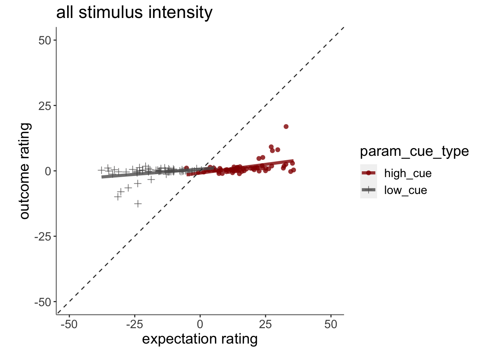
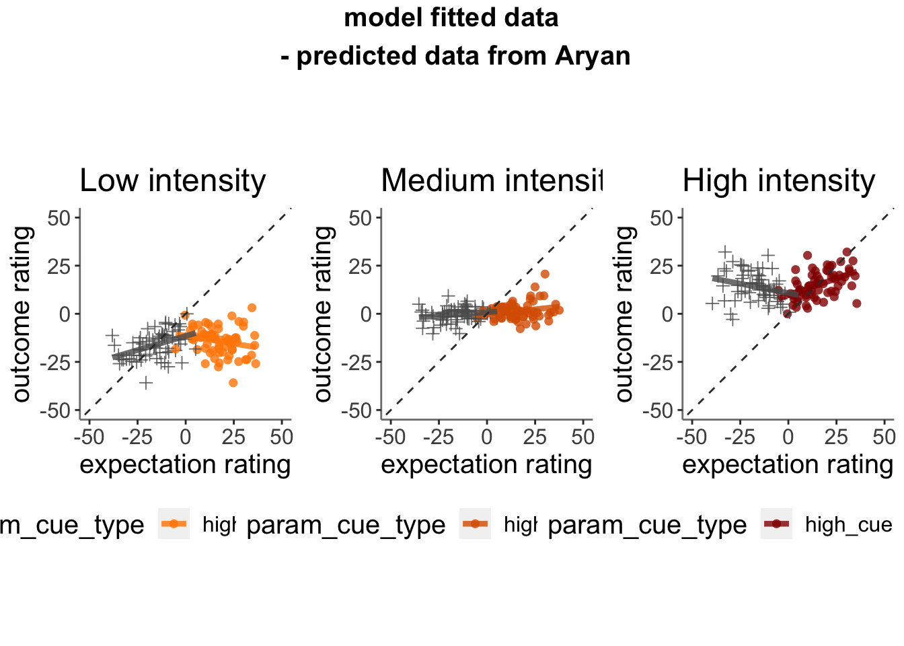
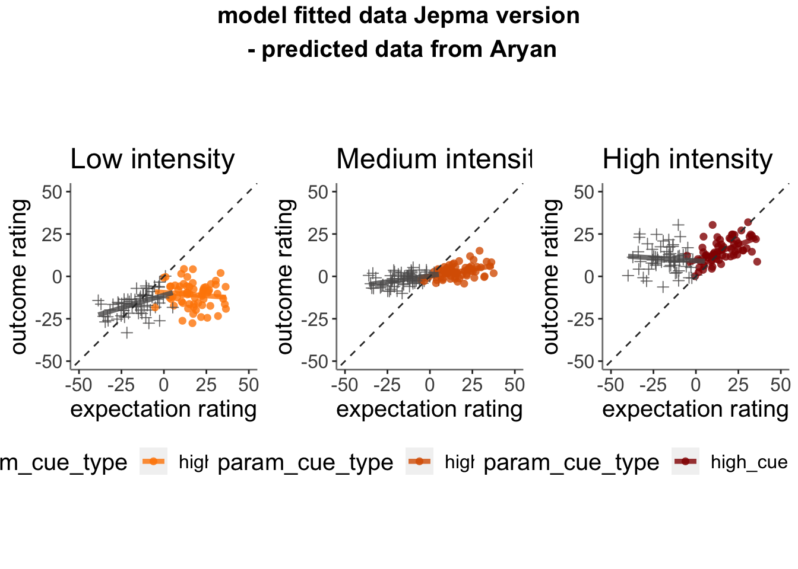
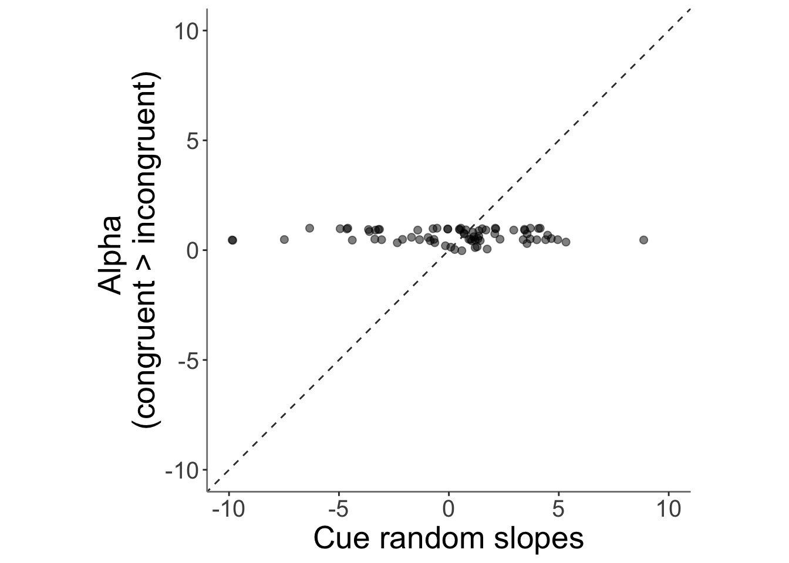

Chapter 11 [beh] RL simulation Aryan
What is the purpose of this notebook?
- Here, I model Aryans model fitted results, using the same scheme as my behavioral analysis (15*.Rmd)
11.1 Plot the relationship between expectation and outcome rating using model 4 simulations (Jepma)


11.2 Plot the relationship between expectation and outcome rating using model 2 simulations (Jepma)


11.2.1 model fits from model 2. expectation ratings (Jepma model)
Code
main_dir = dirname(dirname(getwd()))
data <- read.csv(file.path(main_dir, 'data/simulated/model_ver04_0508/table_pain_new.csv'))
subjectwise_2dv <- meanSummary_2dv(data, c("src_subject_id"),
"event02_expect_angle", "Exp_mdl2" )
ggplot(data = subjectwise_2dv,
aes(x = .data[["DV1_mean_per_sub"]],
y = .data[["DV2_mean_per_sub"]],
size = .5
)) +
geom_point(size = 2, alpha = .5 ) +
ylim(0,180) +
xlim(0,180) +
coord_fixed() +
geom_abline(intercept = 0, slope = 1, color = "#373737", linetype = "dashed", linewidth = .5) +
xlab("Observed\nexpectation rating") +
ylab("Model-fitted \nexpectation rating")+
theme(
axis.line = element_line(colour = "grey50"),
panel.background = element_blank(),
plot.subtitle = ggtext::element_textbox_simple(size = 1),
axis.text.x = element_text(size = 10),
axis.text.y = element_text(size = 10),
axis.title.x = element_text(size = 15),
axis.title.y = element_text(size = 15)
)
11.2.2 model fits from model 2. outcome ratings (Jepma model)
Code
subjectwise_2dv <- meanSummary_2dv(data, c("src_subject_id"),
"event04_actual_angle", "Pain_mdl2" )
ggplot(data = subjectwise_2dv,
aes(x = .data[["DV1_mean_per_sub"]],
y = .data[["DV2_mean_per_sub"]],
size = .5
)) +
geom_point(size = 2, alpha = .5 ) +
ylim(0,180) +
xlim(0,180) +
coord_fixed() +
geom_abline(intercept = 0, slope = 1, color = "#373737", linetype = "dashed", linewidth = .5) +
xlab("Observed\noutcome rating") +
ylab("Model-fitted \noutcome rating")+
theme(
axis.line = element_line(colour = "grey50"),
panel.background = element_blank(),
plot.subtitle = ggtext::element_textbox_simple(size = 1),
axis.text.x = element_text(size = 15),
axis.text.y = element_text(size = 15),
axis.title.x = element_text(size = 20),
axis.title.y = element_text(size = 20)
)
11.3 correlation betweeen alpha_incongruent and cue trial slope (randome effects of cue)
## Warning: Removed 3 rows containing missing values (`geom_point()`).

## Warning: Removed 2 rows containing missing values (`geom_point()`).
11.4 correlation betweeen alpha_incongruent and NPS
Code
# load dataframe
NPS <- data.frame(read.csv(file.path(main_dir, 'data/NPS_curated.csv')))
NPS <- NPS %>%
mutate(congruency = case_when(
cuetype == "cuetype-low" & stimintensity == "low" ~ "congruent",
cuetype == "cuetype-high" & stimintensity == "high" ~ "congruent",
cuetype == "cuetype-low" & stimintensity == "high" ~ "incongruent",
cuetype == "cuetype-high" & stimintensity == "low" ~ "incongruent",
TRUE ~ "other"
))
NPS_congru <- NPS %>%
group_by(sub) %>%
summarise(avg_diff = mean(NPSpos[congruency == "congruent"]) - mean(NPSpos[congruency == "incongruent"]))
# grab alpha_incongruent
model_param <- data.frame(read.csv(file.path(main_dir, "data/RL/modelfit_jepma_0525/par_mdl2_pain.csv")))
model_param <- model_param %>%
mutate(sub = sprintf("sub-%04d", subj_num_new_pain))
# Merge the two dataframes based on the "sub" column
merged_NPS <- merge(NPS_congru, model_param, by = "sub")
merged_NPS$alpha_c_gt_i <- merged_NPS$alpha_c - merged_NPS$alpha_i
# grab cue slope
# grab intersection of subject ids
# plot ggplot
ggplot(data = merged_NPS,
aes(x = .data[["avg_diff"]],
y = .data[["alpha_c_gt_i"]],
size = .5
)) +
geom_point(size = 2, alpha = .5 ) +
ylim(-10,10) +
xlim(-10,10) +
coord_fixed() +
geom_abline(intercept = 0, slope = 1, color = "#373737", linetype = "dashed", linewidth = .5) +
xlab("NPS \n(congruent > incongruent)") +
ylab("Alpha \n(congruent > incongruent)")+
theme(
axis.line = element_line(colour = "grey50"),
panel.background = element_blank(),
plot.subtitle = ggtext::element_textbox_simple(size = 1),
axis.text.x = element_text(size = 15),
axis.text.y = element_text(size = 15),
axis.title.x = element_text(size = 20),
axis.title.y = element_text(size = 20)
)
Code
# run lmer11.5 correlation bettween NPS and PE
11.5.1 test similarity between NPS positive values and PE (11/06/2023)
Code
PEdf <- read.csv(file.path(main_dir, 'data/RL/modelfit_jepma_0525/table_pain.csv'))
NPS <- data.frame(read.csv(file.path(main_dir, 'data/NPS_curated.csv')))
PEdf <- PEdf %>%
mutate(sub = sprintf("sub-%04d", src_subject_id),
ses = sprintf("ses-%02d", session_id),
run = sprintf("run-%02d", param_run_num),
trial = sprintf("trial-%03d", trial_index_runwise-1)
)
merged_NPSpe <- merge(NPS, PEdf, by = c("sub", "ses", "run", "trial"))
subjectwise_2dv <- meanSummary_2dv(merged_NPSpe, c("src_subject_id","stimintensity", "cuetype"),
"PE_mdl2", "NPSpos" )
ggplot(data = subjectwise_2dv,
aes(x = .data[["DV1_mean_per_sub"]],
y = .data[["DV2_mean_per_sub"]],
color = .data[["cuetype"]],
# shape = .data[["stimintensity"]],
# size = .5
)) +
geom_point(size = 2, alpha = .5 ) +
ylim(-50,50) +
xlim(-50,50) +
coord_fixed() +
scale_color_manual(values = c("cuetype-high" ="red","cuetype-low" = "#5D5C5C"))+
geom_abline(intercept = 0, slope = 1, color = "#373737", linetype = "dashed", linewidth = .5) +
xlab("PE") +
ylab("NPSpos")+
theme(
axis.line = element_line(colour = "grey50"),
panel.background = element_blank(),
plot.subtitle = ggtext::element_textbox_simple(size = 1),
axis.text.x = element_text(size = 15),
axis.text.y = element_text(size = 15),
axis.title.x = element_text(size = 20),
axis.title.y = element_text(size = 20)
)## Warning: Removed 13 rows containing missing values (`geom_point()`).
Code
model.25 <- lmer(merged_NPSpe$NPSpos ~ merged_NPSpe$PE_mdl2 + (1|sub), data = merged_NPSpe)
summary(model.25)## Linear mixed model fit by REML. t-tests use Satterthwaite's method [
## lmerModLmerTest]
## Formula: merged_NPSpe$NPSpos ~ merged_NPSpe$PE_mdl2 + (1 | sub)
## Data: merged_NPSpe
##
## REML criterion at convergence: 20826.7
##
## Scaled residuals:
## Min 1Q Median 3Q Max
## -5.4290 -0.5073 -0.0168 0.5202 5.5313
##
## Random effects:
## Groups Name Variance Std.Dev.
## sub (Intercept) 28.52 5.340
## Residual 68.76 8.292
## Number of obs: 2922, groups: sub, 54
##
## Fixed effects:
## Estimate Std. Error df t value Pr(>|t|)
## (Intercept) 6.501e+00 7.457e-01 5.305e+01 8.718 8.06e-12 ***
## merged_NPSpe$PE_mdl2 3.876e-02 6.866e-03 2.896e+03 5.645 1.81e-08 ***
## ---
## Signif. codes: 0 '***' 0.001 '**' 0.01 '*' 0.05 '.' 0.1 ' ' 1
##
## Correlation of Fixed Effects:
## (Intr)
## mr_NPS$PE_2 -0.05211.5.2 test relationship between PE and cue type and stimintensity (06/16/2023)
Code
model.PENPS <- lmer(NPSpos ~ PE_mdl2*cuetype*stimintensity + (1|sub), data = merged_NPSpe)
summary(model.PENPS)## Linear mixed model fit by REML. t-tests use Satterthwaite's method [
## lmerModLmerTest]
## Formula: NPSpos ~ PE_mdl2 * cuetype * stimintensity + (1 | sub)
## Data: merged_NPSpe
##
## REML criterion at convergence: 20816
##
## Scaled residuals:
## Min 1Q Median 3Q Max
## -5.5455 -0.5260 -0.0153 0.5196 5.6086
##
## Random effects:
## Groups Name Variance Std.Dev.
## sub (Intercept) 28.32 5.321
## Residual 68.21 8.259
## Number of obs: 2922, groups: sub, 54
##
## Fixed effects:
## Estimate Std. Error df
## (Intercept) 7.590e+00 8.362e-01 8.488e+01
## PE_mdl2 -1.962e-02 3.555e-02 2.887e+03
## cuetypecuetype-low 1.515e+00 9.025e-01 2.890e+03
## stimintensitylow -1.753e+00 8.436e-01 2.883e+03
## stimintensitymed -2.107e+00 6.415e-01 2.873e+03
## PE_mdl2:cuetypecuetype-low 2.818e-03 4.109e-02 2.887e+03
## PE_mdl2:stimintensitylow 4.253e-02 4.452e-02 2.883e+03
## PE_mdl2:stimintensitymed 1.800e-03 4.896e-02 2.870e+03
## cuetypecuetype-low:stimintensitylow -1.618e+00 1.252e+00 2.893e+03
## cuetypecuetype-low:stimintensitymed 4.626e-01 1.160e+00 2.868e+03
## PE_mdl2:cuetypecuetype-low:stimintensitylow -2.715e-02 5.295e-02 2.867e+03
## PE_mdl2:cuetypecuetype-low:stimintensitymed 2.309e-02 5.654e-02 2.863e+03
## t value Pr(>|t|)
## (Intercept) 9.077 3.81e-14 ***
## PE_mdl2 -0.552 0.58111
## cuetypecuetype-low 1.678 0.09337 .
## stimintensitylow -2.077 0.03786 *
## stimintensitymed -3.284 0.00104 **
## PE_mdl2:cuetypecuetype-low 0.069 0.94533
## PE_mdl2:stimintensitylow 0.955 0.33953
## PE_mdl2:stimintensitymed 0.037 0.97068
## cuetypecuetype-low:stimintensitylow -1.293 0.19626
## cuetypecuetype-low:stimintensitymed 0.399 0.69017
## PE_mdl2:cuetypecuetype-low:stimintensitylow -0.513 0.60816
## PE_mdl2:cuetypecuetype-low:stimintensitymed 0.408 0.68304
## ---
## Signif. codes: 0 '***' 0.001 '**' 0.01 '*' 0.05 '.' 0.1 ' ' 1
##
## Correlation of Fixed Effects:
## (Intr) PE_md2 ctypc- stmntnstyl stmntnstym
## PE_mdl2 -0.215
## ctypctyp-lw -0.224 0.174
## stmntnstylw -0.252 0.234 0.273
## stmntnstymd -0.329 0.314 0.308 0.365
## PE_mdl2:ct- 0.184 -0.850 -0.565 -0.232 -0.276
## PE_mdl2:stmntnstyl 0.164 -0.780 -0.096 0.285 -0.217
## PE_mdl2:stmntnstym 0.141 -0.668 -0.096 -0.102 0.138
## ctypctyp-lw:stmntnstyl 0.168 -0.138 -0.747 -0.704 -0.249
## ctypctyp-lw:stmntnstym 0.180 -0.159 -0.741 -0.221 -0.557
## PE_mdl2:ctypctyp-lw:stmntnstyl -0.136 0.636 0.359 -0.222 0.181
## PE_mdl2:ctypctyp-lw:stmntnstym -0.121 0.572 0.337 0.095 -0.117
## PE_m2:- PE_mdl2:stmntnstyl PE_mdl2:stmntnstym
## PE_mdl2
## ctypctyp-lw
## stmntnstylw
## stmntnstymd
## PE_mdl2:ct-
## PE_mdl2:stmntnstyl 0.635
## PE_mdl2:stmntnstym 0.554 0.566
## ctypctyp-lw:stmntnstyl 0.434 -0.235 0.042
## ctypctyp-lw:stmntnstym 0.431 0.090 -0.099
## PE_mdl2:ctypctyp-lw:stmntnstyl -0.705 -0.807 -0.454
## PE_mdl2:ctypctyp-lw:stmntnstym -0.643 -0.478 -0.855
## ctypctyp-lw:stmntnstyl ctypctyp-lw:stmntnstym
## PE_mdl2
## ctypctyp-lw
## stmntnstylw
## stmntnstymd
## PE_mdl2:ct-
## PE_mdl2:stmntnstyl
## PE_mdl2:stmntnstym
## ctypctyp-lw:stmntnstyl
## ctypctyp-lw:stmntnstym 0.562
## PE_mdl2:ctypctyp-lw:stmntnstyl -0.068 -0.295
## PE_mdl2:ctypctyp-lw:stmntnstym -0.226 -0.264
## PE_mdl2:ctypctyp-lw:stmntnstyl
## PE_mdl2
## ctypctyp-lw
## stmntnstylw
## stmntnstymd
## PE_mdl2:ct-
## PE_mdl2:stmntnstyl
## PE_mdl2:stmntnstym
## ctypctyp-lw:stmntnstyl
## ctypctyp-lw:stmntnstym
## PE_mdl2:ctypctyp-lw:stmntnstyl
## PE_mdl2:ctypctyp-lw:stmntnstym 0.52011.5.3 plot the relationship between PE and NPS as a function of cue
Code
ggplot(data = merged_NPSpe,
aes(x = .data[["PE_mdl2"]],
y = .data[["NPSpos"]],
color = .data[["cuetype"]],
size = .5
)) +
geom_point(size = 2, alpha = .5 ) +
ylim(-150,150) +
xlim(-150,150) +
coord_fixed() +
scale_color_manual(values = c("cuetype-high" ="red","cuetype-low" = "#5D5C5C"))+
geom_abline(intercept = 0, slope = 1, color = "#373737", linetype = "dashed", linewidth = .5) +
xlab("PE") +
ylab("NPSpos")+
theme(
axis.line = element_line(colour = "grey50"),
panel.background = element_blank(),
plot.subtitle = ggtext::element_textbox_simple(size = 1),
axis.text.x = element_text(size = 15),
axis.text.y = element_text(size = 15),
axis.title.x = element_text(size = 20),
axis.title.y = element_text(size = 20)
)